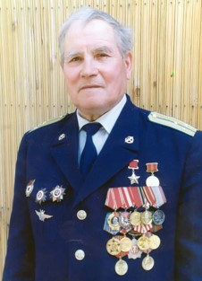

Герои Второй Мировой и Великой Отечественной войны
Герои-уроженцы родных земель
Михаил Петрович Девятаев
Михаил Девятаев родился 8 июля 1917 года в селе Торбеево Спасского уезда в семье крестьянина и был 13-м ребёнком в семье. По национальности мокша. В 1933 году окончил 7 классов. В августе 1934 года бежал в Казань, опасаясь уголовного преследования за хищение колхозной собственности (по его словам, на него был составлен протокол за сбор колосков на поле[1]). Поступил в Казанский речной техникум, который окончил в 1938 году, там же занимался в аэроклубе. Работал помощником капитана баркаса на Волге.
В 1938 году Свердловским РВК города Казань призван в Красную Армию. Окончил в 1940 году Первое Чкаловское военное авиационное училище лётчиков им. К. Е. Ворошилова[2].
В действующей армии с 22 июня 1941 года[3]. Воевал на Западном, Юго-Западном, Центральном, Степном, 2-м Украинском фронтах.
Боевой счёт открыл 24 июня, сбив под Минском пикирующий бомбардировщик Junkers Ju 87. Вскоре отличившихся в боях вызвали из Могилёва в Москву. В числе других был награждён орденом Красного Знамени.
10 сентября 1941 года сбил Ju-88 в районе севернее Ромен (на Як-1 в составе 237 ИАП).
Всего за период с 23 июня 1941 года по 16 сентября 1941 года Михаил произвёл 180 боевых вылетов, в которых сам лично сбил 9 самолётов противника[4].
23 сентября 1941 года, под Киевом при возвращении с задания был атакован немецкими истребителями. Одного сбил, но и сам получил ранение в ногу. После госпиталя врачебная комиссия определила его в тихоходную авиацию. Служил в ночном бомбардировочном полку, затем в санитарной авиации. Только после встречи в мае 1944 года с А. И. Покрышкиным вновь стал истребителем.
Будучи командиром звена 104-го гвардейского истребительного авиационного полка (9-я гвардейская истребительная авиационная дивизия, 2-я воздушная армия, 1-й Украинский фронт), гвардии старший лейтенант Девятаев [13 июля 1944 года сбил FW-190 в районе западнее Горохова, но и сам был сбит и попал в плен[2].
Вечером 13 июля 1944 года вылетел в составе группы истребителей Bell P-39 Airacobra под командованием майора В. Боброва на отражение налёта вражеской авиации. В воздушном бою в районе Львова самолёт Девятаева был подбит и загорелся; в последний момент лётчик покинул падающий истребитель с парашютом, но при прыжке ударился о стабилизатор самолёта. Приземлившись в бессознательном состоянии на захваченной противником территории, попал в плен[5].
Вопрос марки самолёта остаётся спорным, сам Девятаев упоминает о Bell P-63 Kingcobra, в то время как 104 гв.иап (как и вся 9 гв.иад) в этот период (и до 09.05.1945 г.) использовал Bell P-39 Aircobra.
После допроса М. Девятаева перебросили в разведотдел абвера, оттуда — в Лодзинский лагерь военнопленных, откуда вместе с группой военнопленных-лётчиков он 13 августа 1944 года совершил первую попытку побега. Но беглецы были пойманы, объявлены смертниками и отправлены в лагерь смерти Заксенхаузен. Там с помощью лагерного парикмахера (по воспоминанием самого Девятаева, этот заключённый до плена был советским офицером-танкистом) подменившего нашивной номер на лагерной робе, М. Девятаеву удалось сменить статус смертника на статус «штрафника». Вскоре под именем Степана Григорьевича Никитенко он был отправлен в концлагерь на остров Узедом[2], где в ракетном центре Пенемюнде шли разработки нового оружия Третьего рейха — крылатых ракет «Фау-1» и баллистических ракет «Фау-2».
Согласно советским официальным документам, Девятаев был репатриирован из плена 8 февраля 1945 года[6][7].
8 февраля 1945 года группа советских военнопленных из 10 человек захватила немецкий бомбардировщик Heinkel He 111 H-22 и совершила на нём побег из концлагеря на острове Узедом (Германия). Пилотировал его Девятаев. Немцы выслали вдогонку истребитель, пилотируемый кавалером двух Железных крестов и Немецкого креста в золоте обер-лейтенантом Гюнтером Хобомом (нем. Günter Hobohm[8]), однако без знания курса самолёта найти его можно было только случайно. Самолёт был обнаружен воздушным асом полковником Вальтером Далем, возвращающимся с задания, но приказ немецкого командования «сбить одинокий „Хейнкель“» он выполнить не мог из-за отсутствия у него боеприпасов.
В районе линии фронта самолёт обстреляли советские зенитные орудия, пришлось идти на вынужденную посадку. «Хейнкель» сел на брюхо южнее деревни Голлин (ныне предположительно Голина (Старгардский повят)[en] в гмине Старгард-Щециньски, Польша) в расположении артиллерийской части советской 61-й армии[9]. В итоге, пролетев чуть более 300 км, Девятаев доставил командованию стратегически важные сведения о засекреченном центре на Узедоме, где производилось и испытывалось немецкое ракетное оружие, точные координаты стартовых установок «Фау-2», которые находились вдоль берега моря. Доставленные Девятаевым сведения оказались абсолютно точными и обеспечили успех воздушной атаки на полигон Узедом.
Для проверки обстоятельств пленения и обстоятельств побега Девятаев был помещён в фильтрационный лагерь — «Спецлагерь № 7» НКВД[10] (которым был бывший немецкий лагерь «Заксенхаузен»), где подвергался допросам и проверкам[11][12].
В конце марта 1945 года, после проверки и лечения, семеро из десяти участников побега (Соколов, Кутергин, Урбанович, Сердюков, Олейник, Адамов, Немченко) были зачислены в одну из рот 777-го стрелкового полка (по другим данным — в 7-ю стрелковую роту 3-го стрелкового батальона 447-го стрелкового Пинского полка 397-й стрелковой дивизии 61-й армии[13])[14] и отправлены на фронт[прим 1] (даже Немченко, потерявший один глаз, уговорил отправить его на фронт в качестве санитара стрелковой роты).
14 и 16 апреля 397-я дивизия дважды пыталась форсировать реку Одер, но без особого успеха. Именно в эти дни погибли: Пётр Кутергин, Тимофей Сердюков, Владимир Соколов и Николай Урбанович. Фёдор Адамов был ранен и в дальнейшем не принимал участия в боевых действиях. В последующие дни дивизия всё же смогла форсировать Одер, закрепилась и начала продвижение в западном направлении, захватив город Фалькенберг. В этих боях 21 апреля погиб Иван Олейник, а 24 апреля — Владимир Немченко (однако, по словам Девятаева, Олейник якобы погиб на Дальнем Востоке, в войне с Японией)[15].
В итоге, к маю 1945 года из десятерых беглецов в живых остались только четверо: находящийся по ранению в госпитале Фёдор Адамов и трое офицеров — Девятаев, Кривоногов и Емец — которые были отправлены в ОКР «СМЕРШ» 1-й Горьковской запасной стрелковой дивизии, где они до конца войны оставались вне зоны боевых действий, ожидая подтверждения своих воинских званий[13].
В сентябре 1945 года Девятаева нашёл Сергей Королёв, назначенный руководить советской программой по освоению немецкой ракетной техники, и вызвал его в Пенемюнде для консультаций[16]. Поскольку Девятаев служил в аэродромной команде, а ракетный полигон находился в отдалении, ничего сверхсекретного он поведать не мог, но сообщил примерное расположение построек и различных объектов на острове.
В ноябре 1945 года Девятаев был уволен в запас (перед тем он непродолжительное время содержался в лагере на территории колонии-поселения на станции Невель Псковской области)[1][11][12] и долгое время, как бывший военнопленный, испытывал затруднения с поиском работы.
В своих воспоминаниях дочь и сын Михаила Девятаева утверждают, что в декабре 1945 года[17][18] он вернулся в Казань (по другим данным, он вернулся только в начале 1950-х годов)[11] и устроился на работу в Казанском речном порту дежурным по вокзалу, затем выучился на капитана-механика, но некоторое время мог плавать только на служебном катере[19][1]. С 1949 года работал помощником капитана баркаса «Огонёк», с 1952 года — капитаном баркаса «Огонёк», с 1955 года был переведён на должность капитана теплохода[20]. Однако в некоторых публикациях также содержатся сведения о том, что Девятаев в тот период был осуждён за «измену Родине» и отправлен в лагеря, а через 9 лет попал под амнистию[11].
В 1957 году о подвиге Девятаева первым рассказал корреспондент газеты «Советская Татария» Ян Винецкий.
В конце 1950-х годов Девятаеву были поручены испытания «Ракеты» — одного из первых советских судов на подводных крыльях; он долгие годы работал капитаном речных судов и стал первым капитаном теплохода «Метеор»[19]. Практически до конца жизни активно участвовал в общественной жизни, делился воспоминаниями, неоднократно посещал остров Узедом и встречался с другими участниками событий побега, издал две автобиографические книги — «Полёт к солнцу» (1972) и «Побег из ада» (1988).
Член КПСС с 1959 года, до своих последних дней жил в Казани. Работал, пока позволяли силы. Летом 2002 года, во время съёмок документального фильма о нём, приехал на аэродром в Пенемюнде, поставил свечи своим товарищам и встретился с немецким пилотом Г. Хобомом (который должен был догнать и сбить угнанный беглецами «Хейнкель»).
Скончался Михаил Петрович Девятаев 24 ноября 2002 года в Казани на 86-м году жизни. Похоронен в Казани на участке Арского кладбища, где расположен мемориальный комплекс воинов Великой Отечественной войны.

Даян Мурзин
Родился 20 января 1921 года в д. Старые Балыклы (ныне Бакалинский район, Башкортостан). Окончил школу с отличием[2]. По национальности татарин[3][4]. До войны окончил Кушнаренковское педагогическое училище. Работал сельским учителем в деревне Старые Балыклы[2]. Работал директором Тактагуловской неполной средней школы.
В мае 1941 года окончил Рижское военное училище, служил помощником командира взвода в 10-й стрелковой дивизии Прибалтийского военного округа.
На фронте с 22 июня 1941 года. Воевал в составе 10-й стрелковой дивизии в должности командира взвода; командира взвода разведки и командира роты разведки в Ямпольском партизанском отряде «За Родину», входившем в состав партизанского соединения С. А. Ковпака.
С августа 1942 по август 1943 года действовал в качестве агента в 1-й штабной роте Туркестанского легиона. В 1943 году на подпольной работе в Донбассе в г. Сталино. В результате его работы несколько подразделений Туркестанского легиона и легиона «Идель-Урал» перешли на сторону Красной Армии.
В декабре 1943 года с группой разведчиков в Молдавии организовал партизанский отряд имени В. М. Молотова; воевал на территории Винницкой и Одесской областей Украины, в Молдавии до апреля 1944 года. В 1944 году учился в Специальной школе разведчиков партизанского движения Украины. В августе 1944 года в составе группы словацко-чешских разведчиков заброшен в Словакию для организации партизанского движения. Здесь являлся начальником штаба партизанского отряда, затем командиром интернациональной партизанской бригады имени Яна Жижки (был известен под прозвищем «Чёрный генерал»). Воевал на территории Моравии и Чехии вплоть до 9 мая 1945 года.
Познакомился со своей женой в партизанском отряде. Она была радисткой, прожили всю жизнь вместе. После войны работал в отделе народного образования Бакалинского района Башкирской АССР.
После окончания Казанской юридической школы и Всесоюзного юридического заочного института был помощником прокурора Абзелиловского района, помощником прокурора города Стерлитамака.
В 1955—1960 годах — старший следователь, начальник отдела по надзору за законностью в местах лишения свободы прокуратуры Башкирской АССР.
С 1961 по 1962 год был заместителем министра внутренних дел по кадрам. В 1962—1969 годах — вновь на должности начальника отдела по надзору за законностью в местах лишения свободы прокуратуры Башкирской АССР.
С 1969 по 1986 год — председатель Башкирской республиканской коллегии адвокатов, с 1987 по 1990 год — директор Музея интернациональной дружбы.
С 1989 года — член президиума совета ветеранов войны, труда, вооруженных сил и правоохранительных органов Республики Башкортостан.
Умер 10 февраля 2012 года в Уфе.
Прощание и похороны состоялись 13 февраля 2012 года.